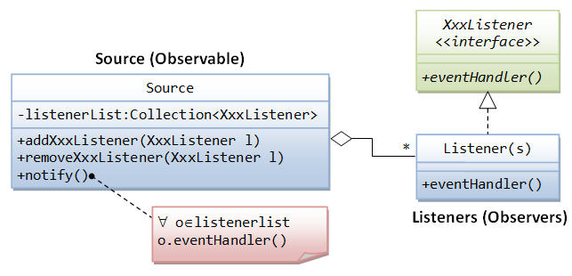
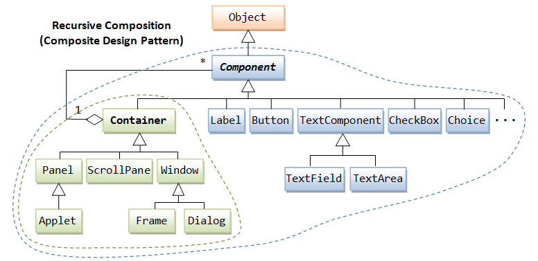
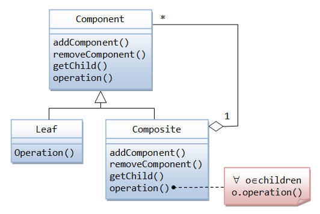

(Advanced) Observer Design Pattern
The Observer design pattern (aka Publish-Subscribe or Observable-Observer) is one of the 23 GoF's design patterns. Whenever the source's state changes, it notifies all its registered listener.
The source and listener are bound via the interface XxxListener, which defines a set of handlers. The source maintain a list of registered listeners, and two methods: addXxxListener() and removeXxxListener(). Both addXxxListener() and removeXxxListener() takes an argument of XxxListener. Hence, a listener object must implement XxxListener in order to be registered. Whenever the source's state changes, it invokes a particular handler of all the registered listeners. The interface guarantees the existence of such handler in the listener.
Example: Creating Your Own Event, Source and Listener
Suppose that we have a source called Light, with two states - on and off. This source is capable of notifying its registered listener(s), whenever its state changes.
- First, we define the
LightEventclass (extends fromjava.util.EventObject). - Next, we define a
LightListenerinterface to bind the source and its listeners. This interface specifies the signature of the handlers,lightOn(LightEvent)andlightOff(LightEvent). - In the source
Light, we use anArrayListto maintain its listeners, and create two methods:addLightListener(LightListener)andremoveLightListener(LightListener). An method callednotifyListener()is written to invoke the appropriate handlers of each of its registered listeners, whenever the state of theLightchanges. - A listener class called
LightWatcheris written, which implements theLightListenerinterface and provides implementation for the handlers.
Event: LightEvent.java
1 2 3 4 5 6 7 |
/** LightEvent */
import java.util.EventObject;
public class LightEvent extends EventObject {
public LightEvent (Object src) {
super(src);
}
}
|
Listener Interface: LightListener.java
1 2 3 4 5 6 |
/** The LightListener interface define the expected behavior of LightEvent listeners */ import java.util.EventListener; public interface LightListener extends EventListener { public void lightOn(LightEvent evt); // Called-back upon light on public void lightOff(LightEvent evt); // Called-back upon light off } |
Source: Light.java
1 2 3 4 5 6 7 8 9 10 11 12 13 14 15 16 17 18 19 20 21 22 23 24 25 26 27 28 29 30 31 32 33 34 35 36 37 38 39 40 41 42 43 44 45 46 47 48 49 50 51 52 53 54 55 56 |
/** The Light Source, which maintains a list of listeners and fires LightEvent to its listeners */ import java.util.*; public class Light { // Status - on (true) or off (false) private boolean on; // Listener list private List<LightListener> listeners = new ArrayList<LightListener>(); /** Constructor */ public Light() { on = false; // initially off System.out.println("Light: constructed and off"); } /** Add the given LightListener */ public void addLightListener(LightListener listener) { listeners.add(listener); System.out.println("Light: added a listener"); } /** Remove the given LightListener */ public void removeLightListener(LightListener listener) { listeners.remove(listener); System.out.println("Light: removed a listener"); } /** Turn on this light */ public void turnOn() { if (!on) { on = !on; System.out.println("Light: turn on"); notifyListener(); } } /** Turn off this light */ public void turnOff() { if (on) { on = !on; System.out.println("Light: turn off"); notifyListener(); } } /** Construct an LightEvent and trigger the appropriate handler on its registered listeners */ private void notifyListener() { LightEvent evt = new LightEvent(this); for (LightListener listener : listeners) { if (on) { listener.lightOn(evt); } else { listener.lightOff(evt); } } } } |
A Listener: LightWatcher.java
1 2 3 4 5 6 7 8 9 10 11 12 13 14 15 16 17 18 19 20 21 22 23 |
/** A LightEvent listener, which is required to implement LightListener interface. */ public class LightWatcher implements LightListener { private int id; // ID of this listener /** Constructor */ public LightWatcher(int id) { this.id = id; System.out.println("LightWatcher-" + id + ": created"); } /** LightEvent handlers - Called back with LightEvent is fired */ @Override public void lightOn(LightEvent evt) { System.out.println("LightWatcher-" + id + ": I am notified that light is on"); } @Override public void lightOff(LightEvent evt) { System.out.println("LightWatcher-" + id + ": I am notified that light is off"); } } |
A Test Driver: TestLight.java
1 2 3 4 5 6 7 8 9 10 11 12 13 14 15 16 17 |
/** A Test Driver */
public class TestLight {
public static void main(String[] args) {
Light light = new Light();
LightWatcher lw1 = new LightWatcher(1);
LightWatcher lw2 = new LightWatcher(2);
LightWatcher lw3 = new LightWatcher(3);
light.addLightListener(lw1);
light.addLightListener(lw2);
light.turnOn();
light.addLightListener(lw3);
light.turnOff();
light.removeLightListener(lw1);
light.removeLightListener(lw3);
light.turnOn();
}
}
|
The expected outputs are:
Light: constructed and off LightWatcher-1: created LightWatcher-2: created LightWatcher-3: created Light: added a listener Light: added a listener Light: turn on LightWatcher-1: I am notified that light is on LightWatcher-2: I am notified that light is on Light: added a listener Light: turn off LightWatcher-1: I am notified that light is off LightWatcher-2: I am notified that light is off LightWatcher-3: I am notified that light is off Light: removed a listener Light: removed a listener Light: turn on LightWatcher-2: I am notified that light is on
(Advanced) Composite Design Pattern
As mentioned earlier, there are two groups of classes in the AWT hierarchy: containers and components. A container (e.g., Frame, Panel, Dialog, java.applet.Applet) holds components (e.g., Label, Button, TextField). A container (e.g., Frame and Panel) can also hold sub-containers (e.g. Panel). Hence, we have a situation that "a container can contain containers or components".
This is quite a common problem: e.g., a directory contains (sub)directories or files; a group contains (sub)groups or elementary elements; the tree structure. A design pattern has been proposed for this problem. A design pattern is a proven and possibly the best solution for a specific class of problems.
As shown in the class diagram, there are two sets of relationship between Container and Component classes.
- One-to-many aggregation: A
Containercontains zero or moreComponents. EachComponentis contained in exactly oneContainer. - Generalization (or Inheritance):
Containeris a subclass ofComponent. In other words, aContaineris aComponent, which possesses all the properties ofComponentand can be substituted in place of aComponent.
Combining both relationships, we have: A Container contains Components. Since a Container is a Component, a Container can also contain Containers. Consequently, a Container can contain Containers and Components.
The Gof calls this recursive composition class design "composite design pattern", which is illustrated as follows:
(Advanced) More on Nested Classes
There are 4 types of nested classes:
staticnested class (as a outer class member),- non-
static(instance) inner class (as a outer class member), - local inner class (defined inside a method),
- anonymous local inner class (defined inside a method).
Static vs. Instance Nested Classes
A nested class can be declared static (belonging to the class instead of an instance). Recall that a static member can be used without instantiating the class and can be referenced via the classname in the form of Classname.memberName (e.g., Math.PI, Integer.parseInt()). Similarly, a static nested class can be used without instantiating the outer class and can be referenced via OuterClassName.InnerClassName.
On the other hand, a non-static nested class belongs to an instance of the outer class, just like any instance variable or method. It can be referenced via outerClassInstanceName.innerClassInstanceName. A non-static nested class is formally called an inner class.
Example of non-static (instance) inner class
In this example, a non-static (instance) inner class called MyInnerClass is defined inside the outer class. The inner class can access private members (variables/methods) of the outer class. This outer class also declares and constructs an instance of inner class as its member variable.
1 2 3 4 5 6 7 8 9 10 11 12 13 14 15 16 17 18 19 20 21 22 23 24 25 |
public class MyOuterClassWithInnerClass {
// Private member variable of the outer class
private String msgOuter = "Hello from outer class";
// Define an inner class as a member of the outer class
// This is merely an definition.
// Not instantiation takes place when an instance of outer class is constructed
public class MyInnerClass {
// Private variable of the inner class
private String msgInner;
// Constructor of the inner class
public MyInnerClass(String msgInner) {
this.msgInner = msgInner;
System.out.println("Constructing an inner class instance: " + msgOuter);
// can access private member variable of outer class
}
// A method of inner class
public void printMessage() {
System.out.println(msgInner);
}
}
// Declare and construct an instance of the inner class, inside the outer class
MyInnerClass anInner = new MyInnerClass("Hi from inner class");
}
|
Two class files are produced: MyOuterClassWithInnerClass.class and MyOuterClassWithInnerClass$MyInnerClass.class.
The following test program:
- Allocates an instance of outer class, which implicitly allocates an inner class (called
anInner) as its member variable. You can access this inner class viaouterClassInstanceName.innerClassInstanceName. - Explicitly constructs another instance of the inner class, under the same outer class instance created in the previous step.
- Explicitly constructs one more instance of the inner class, under a new instance of outer class. This new outer class instance also implicitly allocates an inner class instance as its member, as seen from the output.
1 2 3 4 5 6 7 8 9 10 11 12 13 14 15 16 17 18 |
public class TestInnerClass {
public static void main(String[] args) {
// Construct an instance of outer class, which create anInner
MyOuterClassWithInnerClass anOuter = new MyOuterClassWithInnerClass();
// Invoke inner class's method from this outer class instance
anOuter.anInner.printMessage();
// Explicitly construct another instance of inner class
MyOuterClassWithInnerClass.MyInnerClass inner2
= anOuter.new MyInnerClass("Inner class 2");
inner2.printMessage();
// Explicitly construct an instance of inner class, under another instance of outer class
MyOuterClassWithInnerClass.MyInnerClass inner3
= new MyOuterClassWithInnerClass().new MyInnerClass("Inner class 3");
inner3.printMessage();
}
}
|
Constructing an inner class instance: Hello from outer class Hi from inner class Constructing an inner class instance: Hello from outer class Inner class 2 Constructing an inner class instance: Hello from outer class Constructing an inner class instance: Hello from outer class Inner class 3
An inner class definition is merely a definition of a class. The outer class does not create an inner class instance, when it is instantiated. Nonetheless, you could declare it as member of the outer class, as illustrated in the above example. In many situations, we declare the inner class private. In this cases, the inner class can only be used (declare and construct) within the outer class.
You can set the inner class to private access. In this case, the inner class can only be accessed within the outer class, and not by other classes.
Example of static nested class
In this example, a static nested class is defined inside the outer class, which can access the private static variables of the outer class.
1 2 3 4 5 6 7 8 9 10 11 12 13 14 15 16 17 18 19 20 |
public class MyOuterClassWithStaticNestedClass {
// Private "static" member variable of the outer class
private static String msgOuter = "Hello from outer class";
// Define a "static" nested class as a member of the outer class
// It can access private "static" variable of the outer class
public static class MyStaticNestedClass {
// Private variable of inner class
private String msgInner;
// Constructor of inner class
public MyStaticNestedClass(String msgInner) {
this.msgInner = msgInner;
System.out.println(msgOuter); // access private member of the outer class
}
// A method of inner class
public void printMessage() {
System.out.println(msgInner);
}
}
}
|
You can access the static nested class via the outer classname, in the form of OuterClassName.NestedClassName, just like any static variables/methods (e.g., Math.PI, Integer.parseInt()). You can instantiate a static nested class without instantiate the outer class, as static members are associated with the class, instead of instances.
1 2 3 4 5 6 7 8 9 10 |
public class TestStaticNestedClass {
public static void main(String[] args) {
// Construct an instance of static nested class
// A "static" nested class, like other "static" members, can be accessed via
// the Classname.memberName
MyOuterClassWithStaticNestedClass.MyStaticNestedClass aNestedInner =
new MyOuterClassWithStaticNestedClass.MyStaticNestedClass("Hi from inner class");
aNestedInner.printMessage();
}
}
|
Hello from outer class Hi from inner class
As seen from the example, a static nested class is really like a top-level class with a modified name (OuterClassname.InnerClassname). It can be used as an extension to package for namespace management.
Local Inner Class Defined Inside a Method
Java allows you to define an inner class inside a method, just like defining a method's local variable. Like local variable, a local inner class does not exist until the method is invoked, and goes out of scope when the method exits.
A local inner class has these properties:
- A local inner class cannot have access modifier (such as
privateorpublic). It also cannot be declaredstatic. - A local inner class can access all the variables/methods of the enclosing outer class.
- A local inner class can have access to the local variables of the enclosing method only if they are declared
final(to prevent undesirable side-effects).
Example
1 2 3 4 5 6 7 8 9 10 11 12 13 14 15 16 17 18 19 20 21 22 23 24 25 26 27 28 29 30 31 32 33 34 35 36 37 38 39 |
public class MyOuterClassWithLocalInnerClass {
// Private member variable of the outer class
private String msgOuter = "Hello from outer class";
// A member method of the outer class
public void doSomething() {
// A local variable of the method
final String msgMethod = "Hello from method";
// Define a local inner class inside the method
class MyInnerClass {
// Private variable of the inner class
private String msgInner;
// Constructor of the inner class
public MyInnerClass(String msgInner) {
this.msgInner = msgInner;
System.out.println("Constructing an inner class instance: " + msgOuter);
// can access private member variable of outer class
System.out.println("Accessing final variable of the method: " + msgMethod);
// can access final variable of the method
}
// A method of inner class
public void printMessage() {
System.out.println(msgInner);
}
}
// Create an instance of inner class and invoke its method
MyInnerClass anInner = new MyInnerClass("Hi, from inner class");
anInner.printMessage();
}
// Test main() method
public static void main(String[] args) {
// Create an instance of the outer class and invoke the method.
new MyOuterClassWithLocalInnerClass().doSomething();
}
}
|
Constructing an inner class instance: Hello from outer class Accessing final variable of the method: Hello from method Hi, from inner class
An Anonymous Inner Class
An anonymous inner class is a local inner class (of a method) without assigning an explicit classname. It must either "extends" an existing superclass or "implements" an interface. It is declared and instantiated in one statement via the new keyword.
Example
1 2 3 4 5 6 7 8 9 10 11 12 13 14 15 16 17 18 19 20 21 22 23 24 25 26 27 28 |
public class MyOuterClassWithAnonymousInnerClass {
// Private member variable of the outer class
private String msgOuter = "Hello from outer class";
// A member method of the outer class
public void doSomething() {
// A local variable of the method
final String msgMethod = "Hello from method";
Thread thread = new Thread() { // create an instance of an anonymous inner class that extends Thread class
@Override
public void run() {
System.out.println("Constructing an inner class instance: " + msgOuter);
// can access private member variable of outer class
System.out.println("Accessing final variable of the method: " + msgMethod);
// can access final variable of the method
System.out.println("Hi, from inner class!");
}
};
thread.start();
}
// Test main() method
public static void main(String[] args) {
// Create an instance of the outer class and invoke the method.
new MyOuterClassWithAnonymousInnerClass().doSomething();
}
}
|
Constructing an inner class instance: Hello from outer class Accessing final variable of the method: Hello from method Hi, from inner class
The anonymous inner class definition is equivalent to:
public void doSomething()
......
class OuterClassName.n extends Thread { // where n is a running number of anonymous inner classes
......
}
Thread thread = new OuterClassName.n(); // create an instance of the anonymous inner class
......
}
Clearly, you can only create one instance for each anonymous inner class.
Example of Static Nested Class in JDK: Point2D, Point2D.Double, Point2D.Float, Point
The abstract class Point2D (in package java.awt.geom of Java 2D API), which models a 2D point, declares abstract methods such as getX() and getY(). The Point2D cannot be instantiated. Point2D does not define any instance variable, in particular, the x and y location of the point. This is because it is not sure about the type of x and y (which could be int, float, or double). The instance variables, therefore, are left to the implementation subclasses.
Three subclasses were implemented for types of int, float and double, respectively. Point2D cannot be designed as a pure abstract-method-only interface, as it contains non-abstract methods.
The subclass Point defines instance variables x and y in int precision and provides implementation to abstract methods such as getX() and getY(). Point (of int-precision) is a straight-forward implementation of inheritance and polymorphism. Point is a legacy class (since JDK 1.1) and retrofitted when Java 2D was introduced.
Two subclasses Point2D.Float and Point2D.Double define instance variables x and y in float and double precision, respectively. These two subclasses, are also declared as public static nested class of the outer class Point2D. Since they are static, they can be referenced as Point2D.Double and Point2D.Float. They are implemented as nested static subclasses within the Point2D outer class to keep the codes together and for namespace management. There is no access-control (of private variables of the outer class) involved.
package java.awt.geom;
abstract public class Point2D {
// abstract methods
abstract public double getX();
abstract public double getY();
abstract public void setLocation(double x, double y);
public double distance(double x, double y) { ... }
public double distance(Point2D p) { ... }
public static double distance(double x1, double y1, double x2, double y2) { ... }
......
public static class Double extends Point2D {
public double x;
public double y;
public Double(double x, double y) { ... }
@Override public double getX() { return x; }
@Override public double getY() { return y; }
@Override public void setLocation(double x, double y) { ... }
......
}
public static class Float extends Point2D {
public float x;
public float y;
public Double(float x, float y) { ... }
@Override public double getX() { ... }
@Override public double getY() { ... }
@Override public void setLocation(double x, double y) { ... }
public void setLocation(float x, float y) { ... }
......
}
}
package java.awt.geom;
public class Point extends Point2D {
public int x;
public int y;
public Point(int x, int y) { ... }
@Override public double getX() { return x; }
@Override public double getY() { return y; }
@Override public void setLocation(double x, double y) { ... }
......
}
Point2D.Double and Point2D.Float are public static classes. In other words, they can be used directly without instantiating the outer class, just like any static variable or method (which can be referenced directly via the classname, e.g., Math.PI, Math.sqrt() and Integer.parseInt()). Since they are subclass of Point2D, they can be upcast to Point2D.
Point2D.Double p1 = new Point2D.Double(1.1, 2.2); Point2D.Float p2 = new Point2D.Float(1.1f, 2.2f); Point p3 = new Point(1, 2); // Using polymorphism Point2D p1 = new Point2D.Double(1.1, 2.2); // upcast Point2D p2 = new Point2D.Float(1.1f, 2.2f); // upcast Point2D p3 = new Point(1, 2); // upcast
Note: These classes were designed before the introduction of generic in JDK 1.5, which supports the passing of type as argument.
"Cannot refer to a non-final variable inside an inner class defined in a different method"
Java specification 8.1.3: "Any local variable, formal method parameter or exception handler parameter used but not declared in an inner class must be declared final."
By allowing inner class to access non-final local variables inside a method, the local variable could be modified by the inner class, and causes a strange side-effect.
Solution:
- Declare the variable
finalif permissible. - Declare the variable outside the method, e.g., as member variables of the class, instead of a local variable within a method. Both the method and the inner class could access the variable.
- Use a wrapper class to wrap the variable inside a class. Declare the instance
final.
Referencing Outer-class's "this" from Inner-class
Inside the inner class, "this" refers to the inner class. To refer to the "this" of the outer class, use "OuterClassName.this". But you can reference outer class's members directly without this clumsy syntax. For example,
...... public class MyOuterClassName { private String msg = "Hello"; ...... public MyOuterClassName() { // constructor ...... Button btn = new Button("TEST"); btn.addActionListener(new ActionListener() { @Override public void actionPerformed(ActionEvent e) { // Need OuterClassName.this to refer to the outer class. // But can reference outer class members (e.g., msg) directly. JOptionPane.showMessageDialog(MyOuterClassName.this, msg); } }); } }LINK TO JAVA REFERENCES & RESOURCES
MORE REFERENCES & RESOURCES
- "Creating a GUI With JFC/Swing" (aka "The Swing Tutorial") @ http://docs.oracle.com/javase/tutorial/uiswing/.
- JFC Demo (under JDK demo "
jfc" directory). - Java2D Tutorial @ http://docs.oracle.com/javase/tutorial/2d/index.html.
- JOGL (Java Binding on OpenGL) @ http://java.net/projects/jogl/.
- Java3D (@ http://java3d.java.net/).